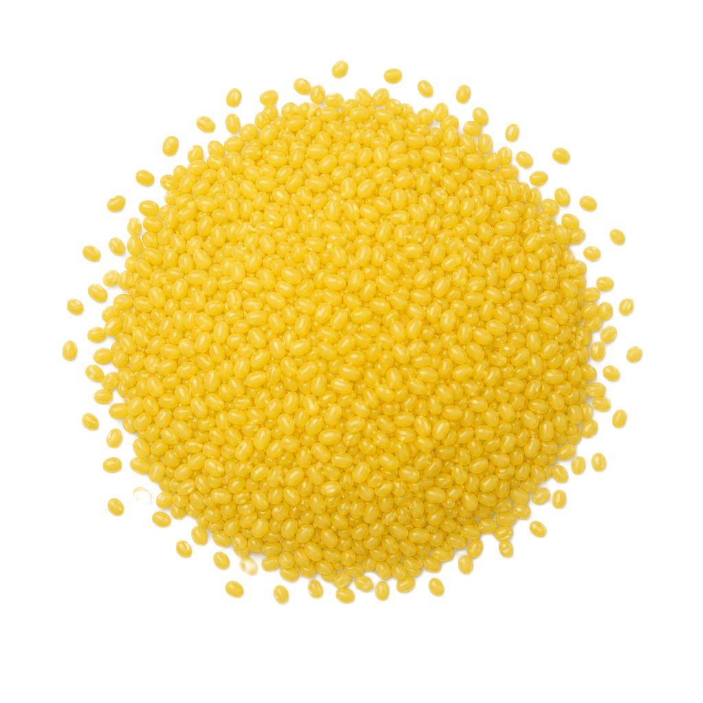
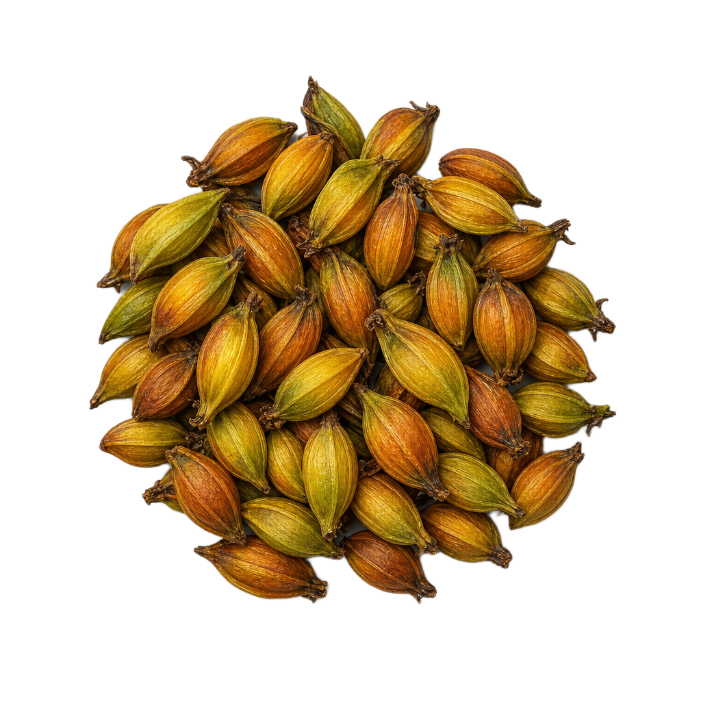

Nguồn gốc của Bánh Phu Thê
Bánh phu thê, lạt mềm buộc chặt
.jpg)


Vùng đất Kinh Bắc
Dưới bóng thâm nghiêm của những mái đền xứ Kinh Bắc, vùng đất Đình Bảng (Bắc Ninh) hiện ra như một dấu son trầm mặc của một vùng đất địa linh nhân kiệt. Người ta nhớ về nơi đây không chỉ như vùng đất phát tích của vương triều nhà Lý lừng lẫy trong lịch sử dân tộc, mà còn bởi một thức quà thanh nhã đã minh chứng cho tình cảm vợ chồng suốt hàng thế kỷ qua — bánh phu thê.

Từ điển tích cung đình…
Tục truyền, bánh phu thê gắn liền với giai thoại cảm động về tình nghĩa vợ chồng của vua Lý Anh Tông. Vào thế kỷ XII, khi đất nước có giặc ngoại xâm, nhà vua trực tiếp cầm quân ra trận. Ở lại kinh thành, hoàng hậu thương chồng vất vả đã tự tay làm nên món bánh gửi ra biên cương cho chồng. Chạm tay vào món quà từ hậu phương, cảm nhận vị ngọt bùi hòa quyện, nhà vua xúc động trước tấm chân tình của người vợ hiền mà đặt tên là bánh phu thê (hay còn gọi là bánh xu xê).
Cũng vì tên gọi ấy mà bánh phu thê luôn được buộc thành cặp, biểu trưng cho sự gắn bó son sắt của tình nghĩa vợ chồng.
…Đến nỗi lòng người vợ nơi bến sông
Bên cạnh điển tích cung đình, bánh phu thê còn được dân gian truyền tụng qua một dị bản khác, đời thường nhưng cũng đầy trắc trở về lòng thủy chung của cặp vợ chồng người lái buôn. Chuyện kể rằng, trước lúc người chồng lên đường đi buôn ở phương xa, người vợ làm bánh tặng chồng và thề rằng cho dù xa nhau, tình cảm vợ chồng vẫn một lòng không đổi. Người chồng cảm động đặt tên cho chiếc bánh là bánh phu thê. Chẳng ngờ ở phương xa, người chồng lạc bước trước những cám dỗ nơi xa xứ và không muốn quay về.
Người vợ ở nhà biết tin, liền làm bánh gửi cho chồng kèm theo lời nhắn:
“Từ ngày chàng bước xuống ghe
Sóng bao nhiêu đợt bánh rầu bấy nhiêu”.
Nhận được bánh và lời nhắn của vợ, người chồng hối hận, tức tốc quay về và chẳng còn nghĩ đến chuyện thay lòng đổi dạ. Từ đó, người đời truyền tai nhau rằng bánh phu thê tượng trưng cho sự thủy chung của vợ chồng và thường hay có mặt trong các lễ cưới như một lời nhắn nhủ đến các đôi vợ chồng trẻ.
Làng nghề truyền thống
Lại có một giai thoại khác mà người dân làng Đình Bảng vẫn thường nhắc lại. Vào thời Lý, mỗi dịp hội làng hay Tết đến, bà con thường làm bánh phu thê từ nông sản địa phương để thành tâm dâng cúng tổ tiên. Trong một lần về thăm quê để lễ tạ tại Đền Đô, vua Lý Thánh Tông và Nguyên phi Ỷ Lan đã có dịp thưởng thức món bánh đặc sản này.
Cảm mến hương vị thanh tao, lại thấu hiểu ý nghĩa nhân văn sâu sắc ẩn chứa trong sự hòa quyện giữa vỏ và nhân bánh, nhà vua đã ban chỉ rằng thức quà này chính là lễ vật phù hợp nhất để kết thành duyên mới. Tên gọi bánh phu thê cũng từ đó mà được xuất hiện, trở thành vật phẩm không thể thiếu trong nghi thức dẫn cưới của người Việt, mang theo khát vọng về một cuộc sống hôn nhân hạnh phúc, viên mãn.
Chiếc bánh Phu Thê
Đi cùng năm tháng, bánh phu thê không chỉ đơn thuần là một thức quà truyền thống, mà đã trở thành biểu tượng của tình nghĩa vợ chồng sắt son. Giữa mâm tráp rực rỡ ngày đại hỷ, cặp bánh hiện diện như một chứng nhân thầm lặng, nhắc nhở đôi lứa về đạo nghĩa vợ chồng.
Gói sau lớp lá dong xanh và sợi lạt đỏ là cả một trời tâm tình, là lời chúc cho một đời bình an, để dù qua bao sóng gió, hai người vẫn mãi đồng lòng nhìn về một hướng.
Ngọt Bùi Hòa Quyện
Vẹn Tròn Đạo Phu Thê
Bánh phu thê — bình dị mà tinh tế
Nếu chỉ nhìn thoáng qua, chiếc bánh phu thê cũng bình dị như bao thức quà quê khác. Nhưng khi sợi lạt đỏ được tháo mở, lớp lá dong xanh tước đi để lộ phần bánh bên trong, người ta mới thực sự cảm nhận được sự tinh tế và khéo léo của những nghệ nhân Đình Bảng. Chiếc bánh ấy không chỉ là sự kết hợp hài hòa giữa các nguyên liệu, mà là một sự cân bằng hoàn hảo giữa thị giác và hương vị.
Để có được một mẻ bánh phu thê thành công, người làm bánh cần phải kỹ càng ngay từ khâu chọn lọc nguyên liệu. Lớp áo ngoài cùng là lá dong xanh mướt giữ vai trò bảo bọc, ấp ủ lấy lớp lá chuối lót bên trong. Ẩn dưới sự bảo bọc ấy là phần vỏ bánh có màu vàng, dẻo dai làm từ bột nếp cái hoa vàng và nước cốt quả dành dành. Nằm trong cùng là phần nhân đậu xanh, hạt sen sên đường mịn màng, điểm xuyết thêm những sợi dừa nạo trắng đan xen vào nhau.
Nhân đậu xanh tròn trịa nằm gọn trong lớp vỏ vuông vức, gợi nhắc về quan niệm "Trời tròn, Đất vuông" của người Việt. Hình vuông tượng trưng cho sự vững chãi, che chở của người chồng. Hình tròn đại diện cho sự vẹn toàn, tần tảo của người vợ. Sự hòa quyện này là lời chúc phúc cho một cuộc hôn nhân viên mãn, nơi âm dương thuận hòa, đất trời đồng điệu.
Kỳ công từ tờ mờ sáng
Để có những cặp bánh tươi ngon kịp trao tay khách trong ngày đại hỷ, những nếp nhà nghề ở Đình Bảng thường phải bắt đầu công việc từ lúc 3, 4 giờ sáng.
"Làm bánh phu thê phải có cái tâm. Mỗi chiếc bánh là một lời hứa — với người nhận, với tổ tiên, và với chính mình. Từ lúc tờ mờ sáng, chúng tôi đã phải thức giấc để chuẩn bị nhân bánh. Riêng phần nhân đậu xanh sau khi sên xong, phải đợi thêm 3 đến 4 tiếng cho nguội hẳn thì mới có thể bắt tay vào nặn bánh. Mọi công đoạn đều phải tuân thủ đúng nhịp độ thời gian, không thể vội vàng, cũng chẳng thể làm dối."
Người thợ không chỉ làm bánh bằng công thức, mà bằng cả sự nâng niu. Việc chờ nhân nguội, đợi bột trong, hay việc cẩn thận thắt từng sợi lạt hồng không chỉ là kỹ thuật, mà là cách người nghệ nhân gửi gắm sự trân trọng, chúc phúc cho tình yêu đôi lứa. Từng chiếc bánh được tạo ra mang vị ngọt của đường nếp, thấm đượm cả những giọt mồ hôi và tấm lòng sắt son của người thợ với nghề.
Ngũ Hành trong chiếc bánh
Nếu chỉ nhìn thoáng qua, bánh phu thê chỉ là một thức quà ngọt ngào giản dị. Nhưng ẩn sâu bên trong lớp lá dong xanh và sợi lạt đỏ thắm kia là cả một vũ trụ thu nhỏ — nơi năm nguyên tố của trời đất hội tụ, cân bằng và hòa quyện.
Người xưa đã gửi vào chiếc bánh triết lý ngũ hành sâu sắc: Mộc nuôi dưỡng, Kim gắn kết, Thổ ổn định, Hỏa thắp lên, Thủy dẫn đường. Đủ năm hành — hứa hẹn một hôn nhân trọn vẹn, hạnh phúc viên mãn.
✦ Chạm để cảm nhận ngũ hành ✦
Sinh sôi · Sức sống


Tinh khiết · Thủy chung


Ổn định · Ấm áp
Niềm vui · Gắn kết
Linh hoạt · Bền bỉ
✦ Ngũ Hành Viên Mãn ✦
Bánh phu thê hội tụ đủ năm hành
Mộc · Kim ·
Thổ · Hỏa · Thủy
Hứa hẹn hôn nhân trọn vẹn,
hạnh phúc viên mãn
Hương vị hòa hợp
Nếu chỉ nhìn thoáng qua, chiếc bánh phu thê cũng bình dị như bao thức quà quê khác. Nhưng hương vị của nó không đến từ cảm giác choáng ngợp, mà từ sự tinh tế được cảm nhận chậm rãi qua từng giác quan.
Khi cắn một miếng bánh, vị ngọt thanh lan tỏa trước tiên nơi đầu lưỡi. Lớp vỏ dẻo mềm được làm từ nếp và đu đủ xanh tạo cảm giác dai nhẹ nhưng không hề dính hay ngấy. Tiếp đó là phần nhân đậu xanh được sên kỹ cùng hạt sen, dừa nạo và đường mía, mang đến vị bùi béo vừa phải. Những sợi dừa nhỏ tạo nên cảm giác sần sật thú vị, giúp hương vị của chiếc bánh trở nên phong phú hơn. Mỗi thành phần đều có dấu ấn riêng nhưng không lấn át nhau, cùng hòa quyện để tạo nên một tổng thể cân bằng và hài hòa.
Người xưa thường nói bánh phu thê ngon nhất khi được dùng cùng một chén trà xanh nóng. Vị chát nhẹ của trà làm dịu đi vị ngọt của bánh, đồng thời giúp những tầng hương vị trở nên rõ nét hơn. Sau khi thưởng thức, dư vị ngọt lành vẫn còn đọng lại nơi cuống họng, hòa cùng hương trà thanh mát, tạo nên cảm giác nhẹ nhàng và thư thái.
Có lẽ cũng bởi vậy mà bánh phu thê không chỉ xuất hiện trong những mâm tráp cưới hỏi, mà còn trở thành thức quà để người ta ngồi lại bên nhau, nhâm nhi cùng chén trà và trò chuyện trong những dịp sum họp.
Nhưng điều đọng lại sau cùng không chỉ là hương vị. Đó còn là ý niệm về sự gắn kết, về một mái ấm được xây dựng bằng sự đồng lòng và sẻ chia. Bởi suy cho cùng, điều mà người ta trao nhau và cùng nhau thưởng thức không chỉ là một món sính lễ đơn thuần, mà là lời nguyện ước cho một cuộc hôn nhân bền chặt — nơi hai tâm hồn nguyện cùng nắm tay nhau đi qua mọi thăng trầm của cuộc sống.
Bảo tồn một phần hồn cốt
Ngày nay, giữa dòng chảy hối hả của cuộc sống, khi những trào lưu mới liên tục được tạo ra và thay thế nhau với tốc độ chóng mặt, nhiều làng nghề truyền thống đang lặng lẽ đối mặt với bài toán của sự tồn tại. Nghề làm bánh phu thê cũng không nằm ngoài vòng xoáy ấy. Những nếp sống xưa dần đổi thay, những thói quen tiêu dùng mới xuất hiện, khiến khoảng cách giữa con người với các giá trị truyền thống đôi khi trở nên xa hơn bao giờ hết.
Thế nhưng, có những điều tưởng chừng mong manh lại sở hữu sức sống bền bỉ lạ kỳ. Ở làng nghề làm bánh phu thê tại Đình Bảng và nhiều vùng quê Bắc Bộ, những nghệ nhân vẫn miệt mài gìn giữ nghề như gìn giữ một phần ký ức của dân tộc. Họ không chỉ làm bánh để mưu sinh, mà còn mang trên vai trách nhiệm lưu truyền một di sản văn hóa đã được cha ông vun đắp qua nhiều thế hệ. Từ việc chọn nếp, đồ đậu, sên nhân, gói lá dong đến buộc từng sợi lạt đỏ, tất cả đều được thực hiện bằng đôi tay và bằng cả niềm tự hào với nghề truyền thống.
Bảo tồn bánh phu thê không đơn thuần là lưu giữ một công thức ẩm thực cổ truyền. Đó còn là gìn giữ một phần hồn cốt văn hóa Việt Nam, những giá trị gia đình, sự gắn bó và lòng thủy chung được trao truyền từ đời này sang đời khác. Khi một làng nghề còn đỏ lửa, một chiếc bánh còn hiện diện trong lễ cưới, nghĩa là bản sắc dân tộc vẫn còn được tiếp nối trong đời sống hôm nay.
Và có lẽ, chừng nào người Việt còn trân trọng những giá trị của tình yêu chân thành, còn nâng niu hạnh phúc gia đình và còn tự hào về cội nguồn văn hóa dân tộc, chừng đó chiếc bánh phu thê vẫn sẽ hiện diện trong những ngày vui, lễ cưới, những câu chuyện được kể bên mâm cỗ sum vầy. Sắc đỏ của sợi lạt, sắc xanh của lá dong và màu vàng hổ phách của lớp bánh trong veo sẽ vẫn tiếp tục kể câu chuyện kéo dài suốt hàng thế kỷ — câu chuyện về một dân tộc biết gửi gắm triết lý sống vào những điều bình dị nhất, để rồi từ một chiếc bánh nhỏ bé, kết tinh thành biểu tượng của tình yêu, của hạnh phúc và của bản sắc văn hóa Việt Nam trường tồn cùng thời gian.
"Đôi ta như bánh phu thê
Đẹp duyên, vẹn nghĩa, chẳng nề gian nan."